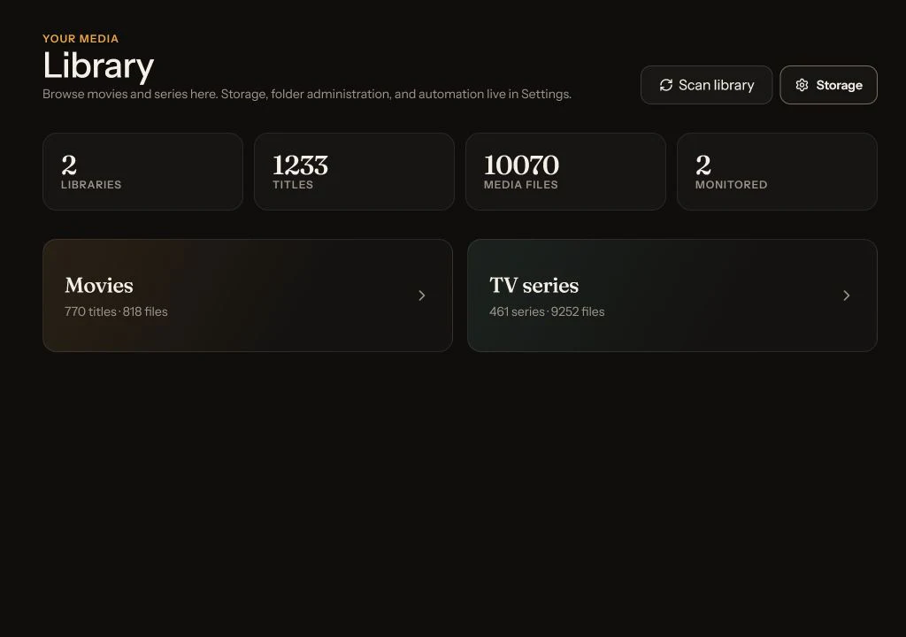

Clone + environment
Prepare the project.
git clone https://github.com/TannerMidd/Nooklet.git
cd Nooklet
cp .env.example .envOn Windows PowerShell, replace the final command with Copy-Item .env.example .env.
User guide Start · use · recover
This guide takes a new administrator from an empty host to a verified first request, then gives every user a clear map for discovery, seasons, Activity, Library, and common recovery. Detailed runbooks remain one click away in the Wiki.
Task finder
The full guide always remains visible when JavaScript or search is unavailable.
Choose the right scope and destination, then submit.
05 · TVUnderstand season recoveryKnow when Nooklet retries, falls back, waits, or needs repair.
06 · FollowRead Activity correctlySeparate active recovery from work that needs intervention.
07 · OrganizeKeep Library accurateScan destinations, filter titles, and reconcile external changes.
No guide topic matches that search. Try a shorter symptom or open the complete troubleshooting guide.
Administrator path
Configure one complete movie or TV path first. Recommendations, watch history, notifications, and the other media type can wait.
Use the Docker setup builder to map media and staging drives, then start Compose.
Use the one-time bootstrap token, then remove it and recreate the container.
Test TMDB, one Newznab indexer, and either native Usenet or SABnzbd.
Use container-visible paths for a writable destination and, for native Usenet, staging.
Setup Center must show the intended media path and background worker as ready.
Follow it through Activity until the final file is visible in Library.
Ready means verified, not merely saved
Step 1
Docker is the recommended route. It supplies Node.js, the worker, SQLite, the native downloader, PAR2, UnRAR, and 7-Zip as one reproducible deployment.
Have Docker Compose v2, Git, a media folder, a separate staging folder for native downloads, TMDB credentials, a Newznab account, and either Usenet credentials or an existing SABnzbd instance.
Clone + environment
git clone https://github.com/TannerMidd/Nooklet.git
cd Nooklet
cp .env.example .envOn Windows PowerShell, replace the final command with Copy-Item .env.example .env.
Start + verify
docker compose config --quiet
docker compose up -d --build
docker compose psOpen http://localhost:42021 after the service is healthy.
The path rule that prevents most confusion
Nooklet runs inside the container. It cannot use F:\… directly. If the host staging
folder is mounted at /downloads, set DOWNLOAD_ENGINE_DIR beneath
/downloads.
services:
app:
volumes:
- "D:/Media/Movies:/media/movies"
- "D:/Media/TV:/media/tv"
- "F:/Nooklet/Downloads:/downloads"Then use these container-side environment values:
APPROVED_MEDIA_ROOTS=/mediaAPPROVED_DOWNLOAD_ROOTS=/downloadsDOWNLOAD_ENGINE_DIR=/downloads/nooklet-engine
One-paste Docker setup
Pick the operating system that runs Docker, add your movie and TV folders, and choose download staging. Nooklet generates everything needed for a new install: the repository, private environment, drive mounts, container build, writable-mount check, startup, and health check.
On Windows or macOS, open Docker Desktop and wait for its Linux engine; on Linux, start the Docker daemon. The generated command checks Docker and your host folders before cloning or creating files.
Ready to install
Open PowerShell on Windows or Terminal on Linux/macOS in the parent folder where you want Nooklet installed. Safe to re-run: if a setup attempt fails partway, paste this command (or a freshly generated one) again and it picks up where things left off. An existing install's secrets are always kept, never overwritten.
It contains newly generated secrets and may remain in your clipboard and shell history. The
terminal prints your one-time bootstrap token after startup. Create the first administrator,
clear BOOTSTRAP_TOKEN from .env, then run
docker compose up -d --force-recreate.
Step 2
Saving a credential or folder is not the same as being ready. Return to Setup Center after each configuration step and look for a verified, writable, capacity-aware path.
Enter the exact one-time bootstrap token, a valid email, display name, and strong password.
Clear BOOTSTRAP_TOKEN in .env, then recreate the container so the route closes.
Open Settings → Connections, test the credential, and confirm Verified.
Verify native Usenet (preferred) or SABnzbd. Only one is required.
Enable the provider, select Movies and/or TV categories, then use Test & add.
In Settings → Storage, choose a container path inside an approved root and verify write access.
Open Health & readiness. The background worker must be responsive and non-degraded.
Automatic acquisition does not support Torznab or torrent transport. If no compatible Newznab source is enabled, Nooklet stops with a setup action instead of choosing an unusable release.
Daily use
Search and Discover enter the same request workflow. Recommendations are another doorway—not a different acquisition system.
Movie
TV
An NZB in a queue is active work, not an available title. Nooklet confirms availability after processing, safe import, and library observation of the final media file.
After an administrator verifies an OpenAI-compatible provider, open Movie ideas or TV ideas. Add a prompt or genres, optionally use watch-history context, and like, dislike, or open a suggestion. Past picks keeps generated batches; Your taste shows the signals shaping later ideas.
AI is optional. You can always search and request a known title without it.
TV request resilience
The season plan is the durable outcome. Pack and episode downloads are inspectable attempts inside it.
Nooklet may be trying another compatible pack, waiting for active capacity, switching to missing aired episodes, or rechecking an unavailable episode. No manual retry is needed.
Follow the displayed storage, destination, downloader, credential, or indexer action. Fix that condition, then choose Resume season recovery.
Eligible monitored episodes are now represented in the library. Future or unmonitored episodes can remain outside this plan.
Search and try a matching release.
Eligible content failures advance through at most three physical pack attempts.
No usable pack, exhausted packs, or incomplete imported coverage moves to missing aired episodes automatically.
Owned files and compatible active work are reused; unavailable episodes keep their own retry schedule.
The season plan, queue intent, attempts, and retry timing survive a process restart. An interrupted native transfer currently restarts from the stored NZB; byte-level transfer resume is not implemented.
Follow the work
Start with the group status and message before acting on a child attempt. A red child release inside a Recovering season can simply be evidence that the coordinator already moved on.
Search, queue, transfer, processing, import, or automatic recovery is still eligible.
Read the bounded failure message, repair the named boundary, and use the offered retry or resume action.
Search history to confirm success, cancellation, or a final failure and its recorded reason.
Organize and reconcile
Library folders, title records, requests, and media files are separate on purpose. Scans reconcile the configured filesystem with Nooklet’s understanding of what is actually available.

Run a library scan after another tool moves files. Confirm that the destination still resolves inside Nooklet and remains readable; imports additionally require write access.
Shared instance map
Every user
Account, preferences, request history, recommendation feedback, personal history sources, and personal notification preferences where shown.
Administrator
Connections, indexers, storage, downloader, automation, Health & readiness, and managed user access.
The most common storage surprise
The built-in engine checks the filesystem containing DOWNLOAD_ENGINE_DIR. That is the
staging workspace for download, repair, and extraction—not the final movie or TV destination.
Read the configured path, effective path, underlying filesystem, active reservation, and estimated capacity for new work.
/downloads/nooklet-engine./downloads.Apply mount or environment changes
docker compose up -d --build --force-recreate
docker compose psA plain restart reuses the previous environment and mount specification.
Never use docker compose down -v as a troubleshooting step. It deletes the persistent
database volume. Do not delete SQLite, WAL, or SHM files while the app is running.
Symptom-first troubleshooting
Try a failed page once more, then use Health, Activity, Storage, and bounded logs to identify the failing layer. Keep any displayed reference number with your reproduction notes.
Try again once. If it repeats, open Health & readiness, keep the displayed reference, and inspect a bounded app-log window.
Health and diagnostics →Confirm TMDB is Verified and reachable from the Nooklet runtime. AI is unrelated to known-title search.
Discovery guide →Open Setup Center and inspect readiness for that media type: indexer category, downloader, destination, native staging, and worker.
Readiness rules →Confirm an enabled, Verified Newznab source includes Movies or TV categories. Torznab results cannot be acquired.
Indexer guide →Inspect Activity, worker health, the writable approved destination, archive tooling, and—when using SABnzbd—the reported completion-path mapping.
Downloads and import →If the group says Recovering, wait; Nooklet already moved on. If it says Blocked, repair the named boundary and choose Resume season recovery.
Season behavior →Address the service from inside Docker—container localhost is not the host. Allowlist the exact private hostname or IP, then recreate when environment values changed.
HTTP 200 with degraded means the worker is responsive but its latest maintenance pass recorded an error. HTTP 503 means the database is unavailable or the worker is stale.
Stop burst retries during the five-minute window. A disabled user needs another administrator; a temporary password must be replaced from Account.
Account recovery →Run quiet Compose validation, inspect the earliest bounded log error, and check port or container-name collisions before rebuilding repeatedly.
Container troubleshooting →Routine operations
Nooklet’s SQLite database contains users, settings, requests, history, jobs, and audit events. Application updates and database state must be treated as one recovery pair.
Record the current Git revision, create a verified database copy, and move it off the Docker volume.
Use a fast-forward-only pull, rebuild Compose, then read startup and migration logs.
Check /api/health, sign in, inspect representative state, and exercise one workflow.
Need the deeper runbook?
Use the full Wiki for platform-specific installation, every configuration field, restore rehearsal, account recovery, advanced networking, API contracts, and contributor documentation.